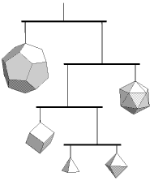

To make this model you will need:

Download the PDF (8K) file; then follow the
directions below to make the model on the left. It is made from two
different coloured parts, you may want to change the colours or decorate
them yourself.
Print the PDF pages onto stiff paper. If possible print each
part onto different coloured paper to make the model more interesting.
Cut out all five plans on the two sheets with scissors around the outside solid lines.
Score along the dashed lines with a compass point and a ruler.
Fold up along the dashed lines.
Glue a length of thread to the lettered side of one of the faces near to a vertex.
Glue each tab to the face with the same letter using quick-drying glue leaving the face without tabs until last. The letters and lines should be inside the model and the thread come out of a vertex.
Get some thin plastic drinking straws and cut off lengths to make the horizontal supports for the mobile (see figure above).
Attach the threads to the straws with slip knots, gluing the ones at the ends to the straws.
Adjust the central threads until the mobile balances and then glue these.
 Click here to return to BCA homepage
Click here to return to BCA homepage